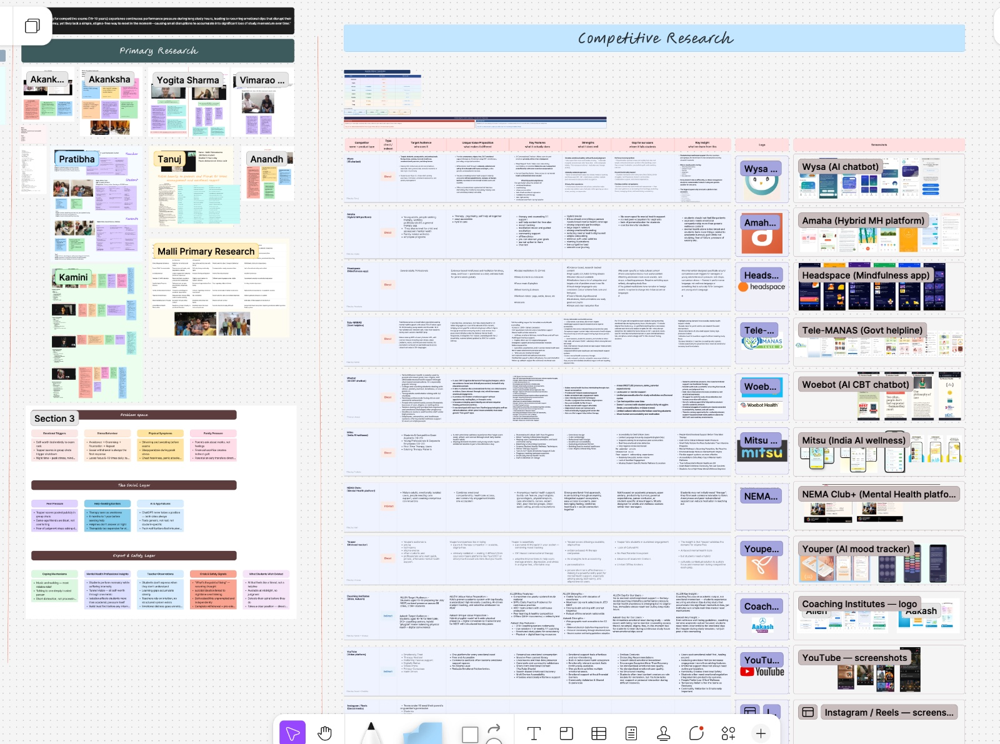
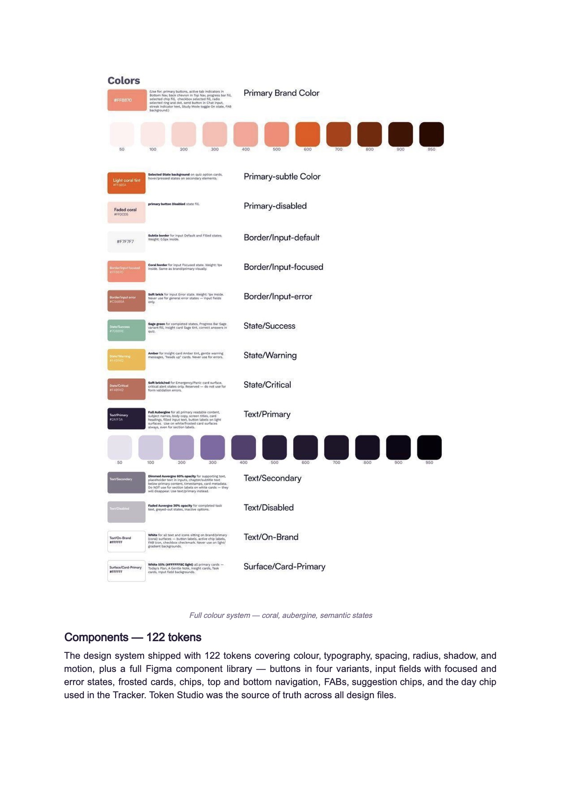
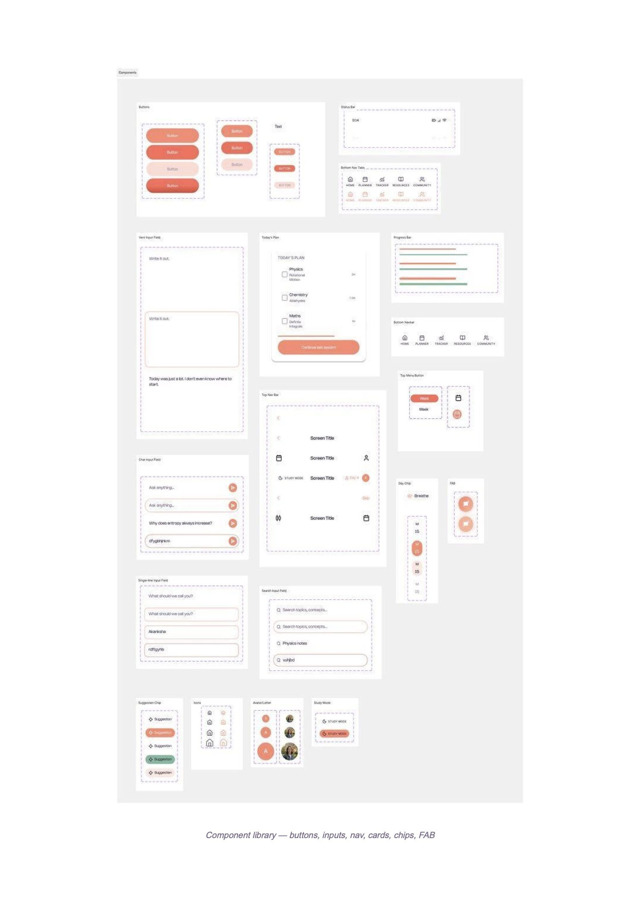

Primary research
27 touchpointsStudent and parent conversations helped ground the work in daily routines, pressure, and existing coping strategies.
EdTech · Research + Product Design
A study companion with an emotional-support layer, designed for competitive-exam aspirants aged 15–19.
The product looks and feels like a study planner. Support is built into familiar study moments-so students can find room to reset without being asked to label themselves.
Explore the case study
My role
Lead UX
Team
10 people
Timeline
8 weeks
Deliverables
Research, system, prototype, testing
01 · Research
We began broadly, then narrowed the focus as fieldwork surfaced a distinct need among younger exam aspirants. Primary conversations with students and parents across home visits, cafés, and video calls-were paired with secondary research and a review of existing study and support products.

Primary research
27 touchpointsStudent and parent conversations helped ground the work in daily routines, pressure, and existing coping strategies.
Secondary + competitive research
7 research dimensionsWe reviewed published research and products including Wysa, Amaha, Headspace, Tele-MANAS, Woebot, Mitsu, Youper, Allen/Aakash, and YouTube.
Patterns that shaped the direction
02 · Synthesis & ideation
Research-led persona
A composite persona shaped from recurring research patterns: disciplined, under pressure, and more comfortable with private, non-judgmental support than generic pep talks.
Design need
Make it easier to recover after a difficult moment and return to studying without guilt.
The emotional journey we designed around
Team ideation
28 ideas · 6 themesHow-Might-We prompts opened up options; synthesis, impact-versus-effort prioritisation, and MoSCoW selection helped the team choose a study planner and companion with support embedded in everyday flows.
03 · Visual direction
The visual system pairs frosted surfaces and soft gradients with generous spacing, rounded components, and a restrained coral action colour. The intention was to feel supportive without becoming childish, clinical, or visually demanding.
#FF8870#2A1F3A#F8D8CB#E8E3F2Product type
Nohemi for display · Satoshi for utility
Brand mark
The Floating Dot: an arch for pressure, with the student’s mind held above it.


04 · Prototype & test
Five flows moved from low-fidelity wireframes into mid- and high-fidelity screens. A Figma prototype carried the product journey; a working HTML prototype let the team test real Ask AI and Buddy conversations. Seven prompt iterations helped bring those experiences closer to their intended voices.

Maze usability study · 6 tasks
10 participants completed the full task set; the report also records 5–6 mid-test drop-offs.
These are task-level usability results, not evidence of long-term learning or wellbeing outcomes. The onboarding task also received an ease rating of 3.5/5.
Changes made after testing
05 · Reflection
The early study supported the emotional framing and surfaced concrete navigation changes. It also exposed a limit: some participants dropped out during the six-task test. Next, I would shorten or split the sessions and validate the Buddy conversation, Vent in a late-night context, and longer-term Tracker patterns.
As Lead UX, one learning was to trust team ownership sooner rather than personally reviewing every artifact.
Explore the source work